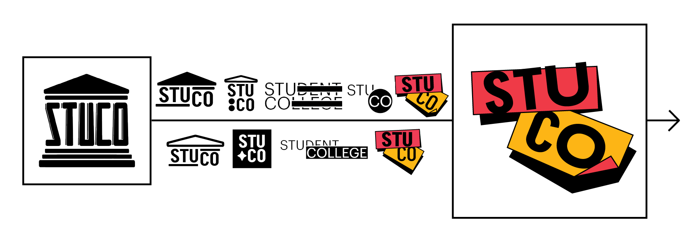
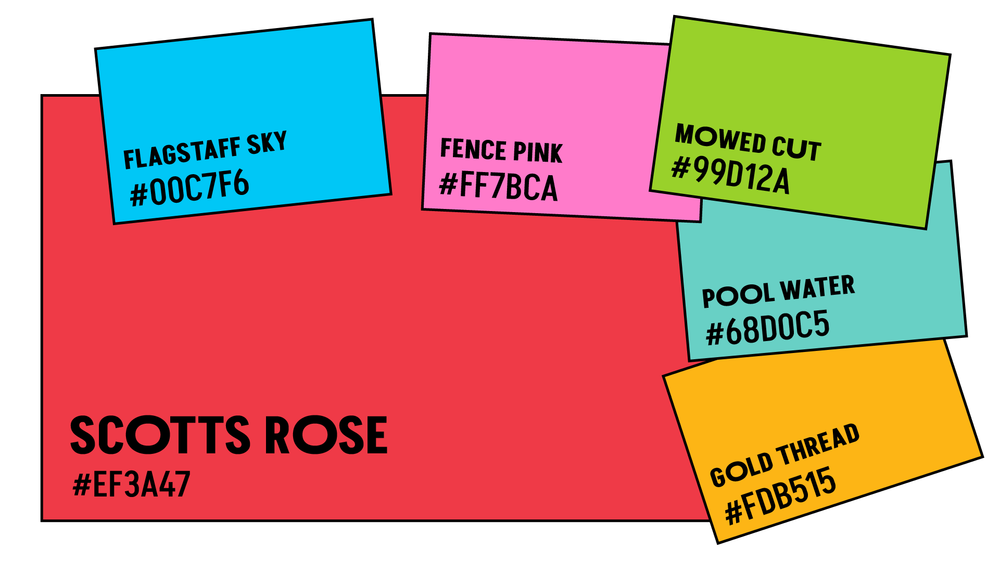
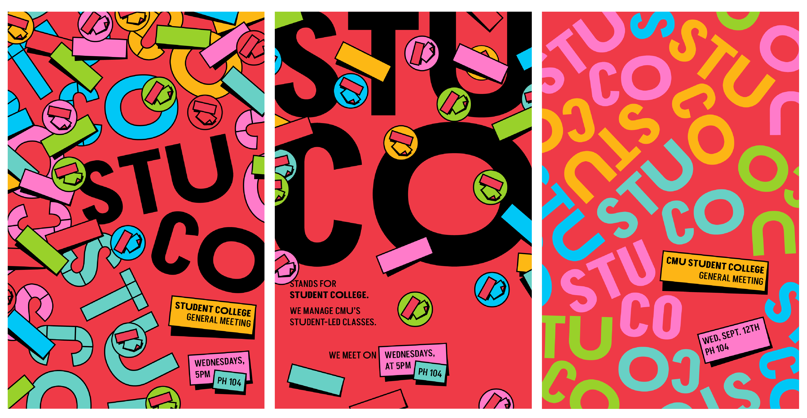

cmu stuco branding
What's one thing you could talk about for hours? Here at CMU, you can make that topic into a full fledged course, open to all students. From tea culture to Taylor Swift to board games to niche programming languages, anyone can teach anything in Student College! So, how do we make a brand for a club that can be anything and everything?
TIME: july 2023 - may 2025
ROLE: creative direction, brand identity
TOOLS: illustrator
COLLABORATORS: dion lewis
ideating
 I was elected as the Student College Design Chair for the 23-24 school year, and I recruited my classmate Dion to help me with the position. The summer before the academic year, we tasked ourselves with creating a real brand identity for StuCo. The old logo was giving sutdent government, serious business, no whimsy. StuCo is full of whimsy! Something had to change.
StuCo as a club is responsible for overseeing all student taught courses on campus, and these courses can be about basically anything under the sun. We wanted to make an identity that reflected this flexibility, variety, and backbone of CMU student culture and community. Together, we landed on a post-it note motif, using bold drop shadows and a vibrant CMU color palette that can be applied to nearly any topic.
application
This idnetity primarily exists digitally on our communication channels like Instagram, Slack, and CMU's club platform TartanConnect. Some physical materials like posters, flyers, and stickers are also made for specific events.
I was elected as the President for the 24-25 academic year, and Dion was elected as the new Design Chair. I continue to collaborate with him on the brand and how to extend it for our current club needs, but he has really made it what it is today!
Check out our Instagram here.